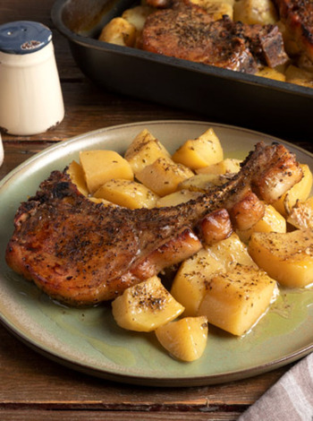
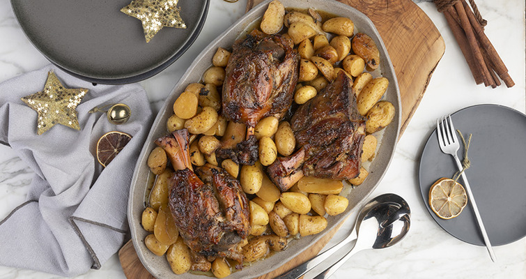

Πρωινό
Συνταγές με πρωτεΐνη για γερό ξεκίνημα.
Overnight Oats Τιραμισού
Μερίδες: 2
~300 kcal/μερίδα
~23 g πρωτεΐνη/μερίδα
Υλικά
- 50 g νιφάδες βρώμης
- 90 ml ρόφημα αμυγδάλου
- 2 κ.σ. σιρόπι σφενδάμου
- ½ κ.γ. εκχύλισμα βανίλιας
- 1 κ.σ. σπόρους τσία
- 1 κ.γ. στιγμιαίο καφέ (σκόνη)
- 160 g γιαούρτι στραγγιστό
- Κακάο & 1 πουράκι (προαιρετικά)
Εκτέλεση
- Ανακάτεψε βρώμη, ρόφημα, σιρόπι, βανίλια, τσία και καφέ. Άφησε 10ʼ να σφίξει.
- Ανακάτεψε το γιαούρτι με λίγο σιρόπι/βανίλια.
- Στρώσε εναλλάξ σε βαζάκι. Ψυγείο 6–8 ώρες.
- Σέρβιρε με κακάο.
| Υλικό | Θερμίδες | Πρωτεΐνη (g) |
|---|---|---|
| Βρώμη 50 g | 190 | 6 |
| Γιαούρτι 160 g | 115 | 16 |
| Ρόφημα αμυγδάλου 90 ml | 25 | 1 |
| Σπόροι τσία 10 g | 50 | 2 |
| Λοιπά | 20 | – |
| Σύνολο (ανά μερίδα) | ~300 kcal | ~23 g |
Τυλιχτή Ομελέτα με Ασπράδια, Τυρί Κρέμα και Λαχανικά
Ελαφριά, πρωτεϊνική, έτοιμη σε 10 λεπτά.
~310 kcal/μερίδα
~33 g πρωτεΐνη/μερίδα
Υλικά
- 180 g ασπράδια αυγών
- 80 g τυρί κρέμα light
- 1 πιπεριά Φλωρίνης
- 2 φέτες γαλοπούλα (~90 g)
- 70 g μανιτάρια κονσέρβας
- 2 κ.σ. ελαιόλαδο
- 1 κ.σ. ρίγανη, αλάτι, πιπέρι
- Ρόκα για σερβίρισμα
Εκτέλεση
- Σοτάρουμε λαχανικά 4–5ʼ.
- Χτυπάμε ασπράδια με καρυκεύματα.
- Ψήνουμε, αλείφουμε τυρί κρέμα, γεμίζουμε, τυλίγουμε.
| Συστατικό | Θερμίδες | Πρωτεΐνη |
|---|---|---|
| Ασπράδια 180 g | ~95 | ~21 g |
| Γαλοπούλα 90 g | ~90 | ~15 g |
| Τυρί κρέμα 80 g | ~80 | ~7 g |
| Ελαιόλαδο 2 κ.σ. | ~180 | 0 |
| Μανιτάρια + πιπεριά | ~30 | ~1 g |
| Σύνολο (1 μερίδα) | ~310 kcal | ~33 g |

Πρωινό Burrito με Ομελέτα, Αβοκάντο και Μπέικον
Ενεργειακό, τραγανό, ιδανικό για πρωινό ή brunch.
~480 kcal/μερίδα
~30 g πρωτεΐνη/μερίδα
Υλικά
Για την ομελέτα
- 5 αυγά, μεσαία
- 4 φέτες μπέικον
- 2–3 κ.σ. ελαιόλαδο
- 100 g mix τυριών, τριμμένο
- Αλάτι, πιπέρι
Για τη σύνθεση
- 2 αραβικές πίτες, μεγάλες, σταρένιες
- 2 κ.σ. μαγιονέζα
- 1 ώριμο αβοκάντο
- 50 g καλαμπόκι (κονσέρβα)
- 1 φρέσκο κρεμμυδάκι (το πράσινο)
Μέθοδος Εκτέλεσης
- Χτυπάμε τα αυγά με αλάτι/πιπέρι.
- Ψήνουμε το μπέικον σε 1–2 κ.σ. λάδι, αφαιρούμε.
- Ρίχνουμε υπόλοιπο λάδι, ψήνουμε τα αυγά 1–1½ʼ χωρίς γύρισμα.
- Αποσύρουμε, από πάνω τυρί & μπέικον.
- Ζεσταίνουμε πίτες, αλείφουμε μαγιονέζα.
- Μοιράζουμε ομελέτα, αβοκάντο, καλαμπόκι, κρεμμυδάκι.
- Τυλίγουμε ρολό, ψήνουμε 10–15ʼ συνολικά, κόβουμε & σερβίρουμε.
| Συστατικό | Θερμίδες | Πρωτεΐνη |
|---|---|---|
| Αυγά (5) | ~350 | ~30 g |
| Μπέικον (4 φέτες) | ~120 | ~8 g |
| Τυρί mix 100 g | ~300 | ~20 g |
| Πίτες (2) | ~220 | ~7 g |
| Αβοκάντο 1 | ~160 | ~2 g |
| Καλαμπόκι + μαγιονέζα | ~120 | ~1 g |
| Σύνολο (1 μερίδα) | ~480 kcal | ~30 g |
Καγιανάς με Ντομάτα & Φέτα πάνω σε Ψωμί
Κλασικό, χορταστικό πρωινό. Ζουμερά αυγά με αρωματική σάλτσα ντομάτας και φέτα, σε τραγανό ψωμί.
~340 kcal/μερίδα
~13 g πρωτεΐνη/μερίδα
Υλικά
- 1 κρεμμύδι, ξερό
- 1 σκ. σκόρδο
- 3–4 κ.σ. ελαιόλαδο
- 500 g ντομάτες (τριμμένες χωρίς φλούδα)
- 1 κ.σ. κρυσταλλική ζάχαρη
- 2 κ.σ. ξίδι βαλσάμικο
- 1 κ.σ. θυμάρι φρέσκο, 1 κ.γ. ρίγανη φρέσκια, 1 κ.γ. βασιλικό φρέσκο
- 1 κ.γ. πάπρικα, ½ κ.γ. κύμινο
- 4 αυγά, μεσαία
- 50 g φέτα, τριμμένη
- Πιπέρι
Για το σερβίρισμα
- 100 g ρόκα
- 6 ντοματίνια, κομμένα στη μέση
- 4 φέτες ψωμί, ψημένες
- 20 g φέτα, τριμμένη
- Λίγο ελαιόλαδο, πιπέρι
Μέθοδος Εκτέλεσης
- Ζεσταίνουμε αντικολλητικό τηγάνι σε δυνατή φωτιά.
- Κόβουμε το κρεμμύδι σε φέτες ~0,5 εκ., ρίχνουμε 3–4 κ.σ. ελαιόλαδο και σοτάρουμε. Προσθέτουμε το ψιλοκομμένο σκόρδο.
- Πασπαλίζουμε με ζάχαρη· όταν λιώσει, σβήνουμε με βαλσάμικο.
- Μόλις εξατμιστεί, προσθέτουμε τις τριμμένες ντομάτες, θυμάρι, ρίγανη, βασιλικό, πάπρικα και κύμινο. Σιγοβράζουμε 5–10′ μέχρι να «δέσει» η σάλτσα.
- Σε μπολ σπάμε τα αυγά, προσθέτουμε πιπέρι/λίγα μυρωδικά, τα σπάμε ελαφρά και τα ρίχνουμε στο τηγάνι.
- Ανακατεύουμε απαλά 1′ μέχρι να αρχίσουν να σφίγγουν. Τραβάμε από τη φωτιά, ρίχνουμε τη φέτα και ανακατεύουμε να ομογενοποιηθεί.
- Σερβίρισμα: σε πιατέλα ρόκα και ντοματίνια, από πάνω τις φέτες ζεστό ψωμί, μοιράζουμε τον καγιανά, λίγη φέτα, ελαιόλαδο και πιπέρι.
| Συστατικό (για 4 μερίδες) | Θερμίδες | Πρωτεΐνη |
|---|---|---|
| Αυγά 4 τεμ. | ~280 | ~24 g |
| Ελαιόλαδο 3 κ.σ. | ~360 | 0 |
| Ντομάτες 500 g + κρεμμύδι | ~120 | ~4 g |
| Φέτα 70 g (50 g μέσα + 20 g πάνω) | ~190 | ~10 g |
| Ψωμί 4 φέτες | ~400 | ~12 g |
| Σύνολο (ολόκληρη συνταγή) | ~1.350 kcal | ~50 g |
| ➜ Ανά μερίδα (÷4) | ~340 kcal | ~13 g |
Κυρίως
Κρεμώδη, χορταστικά, με ισορροπία πρωτεΐνης/υδατανθράκων.
Σουφλέ Ζυμαρικών με Μανιτάρια
Αφράτο και πλούσιο πιάτο με κρεμώδες μείγμα τυριών και αρωματικά μανιτάρια.
Μερίδες: 4
~630 kcal/μερίδα
~27 g πρωτεΐνη/μερίδα
Υλικά – Μείγμα Μανιταριών
- 500 g μανιτάρια
- 2 πράσα
- 5 κ.σ. ελαιόλαδο
- 1 κ.σ. θυμάρι
- 80 g λευκό κρασί
- Αλάτι, πιπέρι
Υλικά – Μείγμα Τυριών
- 300 g τυρί κρέμα
- 4 αυγά
- 500 g γάλα
- 100 g παρμεζάνα
- 1 κ.σ. θυμάρι
- Ξύσμα λεμονιού
- Αλάτι, πιπέρι
Για τη Σύνθεση
- 500 g ζυμαρικά
- 50 g παρμεζάνα (επικάλυψη)
Εκτέλεση
- Σοτάρουμε πράσα/μανιτάρια, σβήνουμε με κρασί.
- Χτυπάμε τυρί κρέμα, αυγά, γάλα, παρμεζάνα, αρωματικά.
- Ζυμαρικά -2ʼ από τον χρόνο. Ταψί, επικάλυψη, ψήσιμο 200°C 30–35ʼ.
| Συστατικό | Θερμίδες | Πρωτεΐνη |
|---|---|---|
| Ζυμαρικά 500 g | ~1750 | ~60 g |
| Μανιτάρια + πράσα + λάδι | ~520 | ~12 g |
| Τυρί κρέμα 300 g | ~780 | ~18 g |
| Παρμεζάνα 150 g | ~600 | ~54 g |
| Αυγά 4 | ~280 | ~25 g |
| Γάλα 500 g | ~330 | ~16 g |
| Σύνολο συνταγής | ~4260 kcal | ~185 g |
| Ανά μερίδα | ~630 kcal | ~27 g |

Χοιρινές Μπριζόλες Λεμονάτες με Πατάτες
Μερίδες: 6
~680 kcal/μερίδα
~40 g πρωτεΐνη/μερίδα
Υλικά
- 1,5 κιλό μπριζόλες χοιρινές (καρέ)
- 6 πατάτες, καθαρισμένες
- 100 g ελαιόλαδο
- 2 κύβοι κότας
- 1–2 κ.σ. μουστάρδα
- Ξύσμα & χυμός από 2 λεμόνια
- 1 σκ. σκόρδο
- 1–2 κ.σ. μέλι
- 2–3 κλ. ρίγανη
- 3–4 κλ. θυμάρι
- 200 ml νερό (ζεστό)
- Πιπέρι
- Για το σερβίρισμα: ρίγανη & θυμάρι
Εκτέλεση
- Προθερμαίνουμε τον φούρνο στους 190°C (αέρα).
- Φτιάχνουμε μαρινάδα (ελαιόλαδο, κύβοι, μουστάρδα, λεμόνι, σκόρδο, μέλι).
- Πατάτες σε κύβους μέσα στη μαρινάδα.
- Χαράζουμε το λίπος των μπριζολών, ρίχνουμε ρίγανη/θυμάρι/πιπέρι.
- Στήνουμε περιμετρικά. Προαιρετικά 12 ώρες μαρινάρισμα.
- Νερό, κλείνουμε με αλουμινόχαρτο, 1 ώρα ψήσιμο.
- Ανακάτεμα – αναστροφή, άλλα 30–60ʼ μέχρι να ροδίσουν.
| Συστατικό | Θερμίδες | Πρωτεΐνη |
|---|---|---|
| Χοιρινές μπριζόλες (βρώσιμο ~900 g) | ~2180 | ~243 g |
| Πατάτες ~1,2 kg | ~920 | ~24 g |
| Ελαιόλαδο 100 g | ~900 | 0 |
| Μέλι 30 g | ~90 | 0 |
| Λοιπά | ~20 | – |
| Σύνολο (ταψί) | ~4110 kcal | ~267 g |
| Ανά μερίδα (÷6) | ~680 kcal | ~40–45 g |

Κοτόπουλο Καυτερό
Μερίδες: 4
~520 kcal/μερίδα
~45 g πρωτεΐνη/μερίδα
Υλικά
- 4 φιλέτα στήθος κοτόπουλου (1 κιλό)
- 4 φέτες ψωμί του τοστ
- 2 κ.σ. βούτυρο (λιωμένο)
- 1,5 κ.σ. κόκκους πιπεριού
- Χυμό από ½ λεμόνι
- 2 κ.σ. ελαιόλαδο
- 1 σκ. σκόρδο
- Αλάτι, 1 κ.σ. θυμάρι, 1 κ.σ. μαϊντανό
- Σερβίρισμα: ρύζι, μουστάρδα, μαγιονέζα
Εκτέλεση
- Πολτοποιούμε ψωμί + βούτυρο (τραγανή επικάλυψη).
- Δεύτερος γύρος: πιπέρι, λεμόνι, λάδι, σκόρδο (μαρινάδα) + θυμάρι/μαϊντανός.
- Αλατίζουμε κοτόπουλο, μαρινάρουμε 30ʼ.
- 220°C αέρα, 20–25ʼ, μέχρι να ροδίσει.
| Συστατικό | Θερμίδες | Πρωτεΐνη |
|---|---|---|
| Κοτόπουλο 1 κιλό | ~1100 | ~220 g |
| Ψωμί τοστ 4 φέτες | ~280 | ~10 g |
| Βούτυρο 2 κ.σ. | ~210 | 0 |
| Ελαιόλαδο 2 κ.σ. | ~180 | 0 |
| Ρύζι (βρασμένο 200 g) | ~280 | ~6 g |
| Σύνολο | ~2050 kcal | ~236 g |
| Ανά μερίδα (÷4) | ~510–530 kcal | ~45–48 g |

Κότσι με Μουστάρδα και Μέλι
Μερίδες: 6
~720 kcal/μερίδα
~50 g πρωτεΐνη/μερίδα
Υλικά
- 3 χοιρινά κότσια (2,5 κιλά)
- 1 κιλό πατάτες baby
- 2 κ.σ. αλάτι · 1 κ.γ. πιπέρι
- 100 g μουστάρδα (απαλή) · 50 g μέλι
- Ξύσμα & χυμός 1 λεμονιού
- 1 κ.γ. κύμινο · 2 σκ. σκόρδο
- Δεντρολίβανο, φρέσκο θυμάρι
- 50 g λευκό κρασί · 400 g νερό · 50 g ελαιόλαδο
Εκτέλεση
- 180°C αέρα, προθέρμανση.
- Πατάτες στη γάστρα, από πάνω τα κότσια, αλάτι/πιπέρι.
- Σάλτσα: μουστάρδα, μέλι, λεμόνι, κύμινο, σκόρδο, μυρωδικά.
- Αλείφουμε, προσθέτουμε κρασί/νερό/λάδι. Καπάκι.
- Ψήσιμο 3 ώρες. Μετά 220°C γκριλ 5–10ʼ για χρώμα.
| Συστατικό | Θερμίδες | Πρωτεΐνη |
|---|---|---|
| Χοιρινό (βρώσιμο 1,8 kg) | ~3600 | ~300 g |
| Πατάτες 1 kg | ~770 | ~20 g |
| Ελαιόλαδο 50 g | ~450 | – |
| Μέλι 50 g | ~150 | – |
| Μουστάρδα & λοιπά | ~30 | – |
| Σύνολο | ~5000 kcal | ~320 g |
| Ανά μερίδα (÷6) | ~720 kcal | ~50–53 g |

Γλυκά & Σνακ
Ελαφριές μπουκιές με ισορροπία γεύσης και πρωτεΐνης.
Ρολάκια Κρέπας με Κοτόπουλο & Τυρί Κρέμα
Μερίδες: ~4 κρέπες (20 ρολάκια)
Γρήγορο snack
Πρωτεϊνικό
Υλικά
Για το κοτόπουλο
- 300 g φιλέτο στήθους
- 1–2 κ.σ. ελαιόλαδο · Αλάτι
Για τις κρέπες
- 150 g γάλα
- 1 αυγό
- 1 κ.σ. ηλιέλαιο (+λίγο για τηγάνι)
- 1 πρέζα αλάτι · 1 πρέζα ζάχαρη
- 40 g αλεύρι γ.ο.χ.
Σύνθεση
- 80 g τυρί κρέμα · 40 g πιπεριά · 40 g καλαμπόκι
Εκτέλεση
- Σοτάρουμε το κοτόπουλο 3–4ʼ.
- Χυλός κρέπας – 4 λεπτές κρέπες (2ʼ/πλευρά).
- Αλείφουμε τυρί, βάζουμε γέμιση, τυλίγουμε, κόβουμε σε ρολάκια.
| Συστατικό | Θερμίδες | Πρωτεΐνη (g) | Υδατ/κες (g) | Λιπαρά (g) |
|---|---|---|---|---|
| Κοτόπουλο 300 g | 495 | 93.0 | 0.0 | 6.0 |
| Τυρί κρέμα 80 g | 144 | 5.6 | 8.0 | 9.6 |
| Γάλα 150 ml | 90 | 5.0 | 7.0 | 5.0 |
| Αλεύρι 40 g | 146 | 4.0 | 30.0 | 1.0 |
| Αυγό 1 | 63 | 6.0 | 0.3 | 4.5 |
| Ηλιέλαιο ~15 g | 135 | 0.0 | 0.0 | 15.0 |
| Ελαιόλαδο ~20 g | 180 | 0.0 | 0.0 | 20.0 |
| Πιπεριά 40 g | 12 | 0.4 | 3.0 | 0.1 |
| Καλαμπόκι 40 g | 36 | 1.2 | 7.8 | 0.5 |
| Σύνολο συνταγής | ~1300 kcal | ~115 g | ~56 g | ~62 g |
| Ανά κρέπα (¼) | ~325 kcal | ~28.8 g | ~14 g | ~15.5 g |
Αυγά Ποσέ σε Πικάντικη Σάλτσα Ντομάτας
Μερίδες: 4
Πικάντικο
Μεσογειακό
Υγιεινό
Υλικά
- 50 ml ελαιόλαδο
- 3 καυτερές πιπεριές
- 1 κρεμμύδι ψιλοκομμένο
- 5 σκ. σκόρδο ψιλοκομμένο
- 1 κ.γ. κύμινο · 1 κ.σ. πάπρικα
- 400 g ντομάτα κονκασέ · Αλάτι
- 6 αυγά · 75 g φέτα · 1 κ.σ. μαϊντανός
- Πίτες (ζεστές) για σερβίρισμα
Εκτέλεση
- Σοτάρουμε πιπεριές/κρεμμύδι 5–8ʼ. Προσθέτουμε σκόρδο/μπαχαρικά 2ʼ.
- Ντομάτα + ½ φλ. νερό, σιγοβράζουμε 15ʼ.
- Σπάμε τα αυγά, σκεπάζουμε ~5ʼ μέχρι να σταθούν.
- Φέτα/μαϊντανός, σερβίρουμε με πίτες.
| Συστατικό | Θερμίδες | Πρωτεΐνη (g) | Υδατ/κες (g) | Λιπαρά (g) |
|---|---|---|---|---|
| Ελαιόλαδο 50 ml | 450 | 0.0 | 0.0 | 50.0 |
| Πιπεριές 3 | 15 | 0.6 | 3.0 | 0.2 |
| Κρεμμύδι 1 | 44 | 1.2 | 10.0 | 0.1 |
| Σκόρδο 5 σκ. | 20 | 0.9 | 5.0 | 0.0 |
| Ντομάτα 400 g | 80 | 2.0 | 18.0 | 0.4 |
| Αυγά 6 | 420 | 38.0 | 3.0 | 30.0 |
| Φέτα 75 g | 199 | 10.5 | 1.5 | 16.0 |
| Σύνολο (χωρίς πίτες) | ~1235 kcal | ~52 g | ~41 g | ~96 g |
| Ανά μερίδα (¼) | ~309 kcal | ~13 g | ~10 g | ~24 g |
Πουτίγκα Πρωτεΐνης με Γεύση Σοκολάτα
Μερίδες: ~8 μπολάκια (~150 g/μερίδα)
~170 kcal/μερίδα
Πρωτεΐνη ~20 g
Υλικά
- 110 g σκόνη πρωτεΐνης ορού (σοκολάτα)
- 1.100 g γάλα light
- 45 g κακάο
- 5 g στέβια
- 65 g κορν φλάουρ
Μέθοδος Εκτέλεσης
- Σε κατσαρόλα: γάλα, πρωτεΐνη, κακάο, στέβια, κορν φλάουρ. Μέτρια φωτιά.
- Σύρμα 3–5΄ μέχρι να δέσει.
- Μοιράζουμε σε μπολάκια. Μεμβράνη να εφάπτεται. Ψυγείο 1–2 ώρες.
- Ανακάτεμα πριν το σερβίρισμα.
| Συστατικό | Θερμίδες | Πρωτεΐνη |
|---|---|---|
| Γάλα 1.100 g | ~430 | ~36 g |
| Πρωτεΐνη 110 g | ~410 | ~88 g |
| Κακάο 45 g | ~110 | ~10 g |
| Κορν φλάουρ 65 g | ~230 | ~2 g |
| Στέβια | ~0 | – |
| Σύνολο (→ /8 μερίδες) | ~1.180 kcal (→ ~148 kcal) | ~136 g (→ ~17 g) |
Πρωτεϊνικές Κρέπες με Πουτίγκα Αλατισμένης Καραμέλας
Μερίδες: 4 (~250 g/μερίδα)
~350 kcal/μερίδα
Πρωτεΐνη ~25 g
Υλικά
Για τις κρέπες
- 200 g πουτίγκα πρωτεΐνης (αλατισμένη καραμέλα)
- 1 αυγό, μεσαίο
- 25 g αλεύρι για όλες τις χρήσεις
- 2 κ.γ. ηλιέλαιο (για το ψήσιμο)
Για τη σύνθεση
- 200 g πουτίγκα πρωτεΐνης (αλατισμένη καραμέλα)
- 1 μπανάνα
- 30 g φουντούκια
Για το σερβίρισμα
- Κουβερτούρα 65%, λιωμένη
- Φουντούκια ψιλοκομμένα
Μέθοδος Εκτέλεσης
- Σε μπολ ανακατεύουμε πουτίγκα, αυγό και αλεύρι με σύρμα χειρός.
- Ζεσταίνουμε αντικολλητικό τηγάνι (20 εκ.) και αλείφουμε με ½ κ.γ. ηλιέλαιο.
- Ρίχνουμε μια κουτάλα μείγμα και ψήνουμε 1–2ʼ ανά πλευρά.
- Φτιάχνουμε συνολικά 4 κρέπες και αποσύρουμε.
- Απλώνουμε 2 κ.σ. πουτίγκα σε κάθε κρέπα, προσθέτουμε φέτες μπανάνας και φουντούκια.
- Τυλίγουμε σε τρίγωνο, περιχύνουμε με λιωμένη κουβερτούρα και πασπαλίζουμε φουντούκια.
| Συστατικό | Θερμίδες | Πρωτεΐνη |
|---|---|---|
| Πουτίγκα 200 g | 170 | 20 g |
| Αυγό | 70 | 6 g |
| Αλεύρι 25 g | 90 | 3 g |
| Μπανάνα | 80 | 1 g |
| Φουντούκια 30 g | 180 | 4 g |
| Κουβερτούρα 10 g | 55 | 1 g |
| Σύνολο (ανά μερίδα) | ~350 kcal | ~25 g |